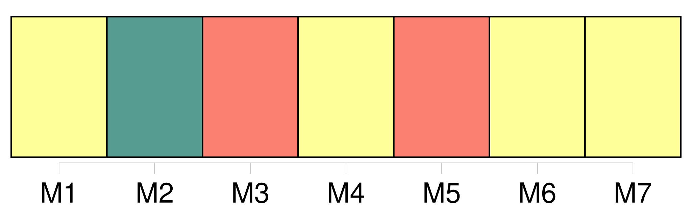
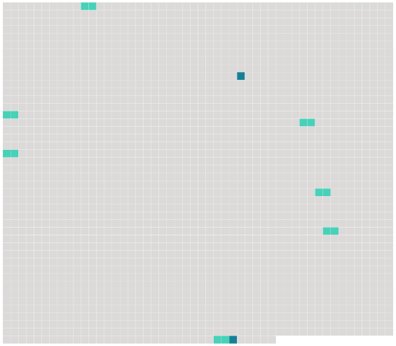

Longueur nb maillons : 9 mentions |
 |
En ligne directe, le mariage est prohibé entre tous [les ascendans] et descendans légitimes ou naturels, et les alliés dans la même ligne. [29 phrases]
À défaut d'aucun [ascendant] , le frère ou la sœur, l'oncle ou la tante, le cousin ou la cousine germains, majeurs, ne peuvent former aucune opposition que dans les deux cas suivans : [5 phrases]
Tout acte d'opposition énoncera la qualité qui donne à l'opposant le droit de la former ; il contiendra élection de domicile dans le lieu où le mariage devra être célébré ; il devra également, à moins qu'il ne soit fait à la requête d' [un ascendant] , contenir les motifs de l'opposition : le tout à peine de nullité, et de l'interdiction de l'officier ministériel qui aurait signé l'acte contenant opposition. [5 phrases]
Si l'opposition est rejetée, les opposans, autres néanmoins que [les ascendans] , pourront être condamnés à des dommages-intérêts. [8 phrases]
Le mariage contracté sans le consentement des père et mère, [des ascendans] , ou du conseil de famille, dans les cas où ce consentement était nécessaire, ne peut être attaqué que par ceux dont le consentement était requis, ou par celui des deux époux qui avait besoin de ce consentement. [10 phrases]
Le père, la mère, [les ascendans] et la famille qui ont consenti au mariage contracté dans le cas de l'article précédent, ne sont point recevables à en demander la nullité. [9 phrases]
Tout mariage qui n'a point été contracté publiquement, et qui n'a point été célébré devant l'officier public compétent, peut être attaqué par les époux eux-mêmes, par les père et mère, par [les ascendans] , et par tous ceux qui y ont un intérêt né et actuel, ainsi que par le ministère public. [29 phrases]
Les enfans doivent des alimens à leurs père et mère, et [autres ascendans] [qui] sont dans le besoin. |
 |
Il est possible de télécharger la ressource sur la page Ortolang |
Si vous avez des questions ou vous voyez des erreurs, merci d'envoyer un mail à silvia.federzoni89@gmail.com |